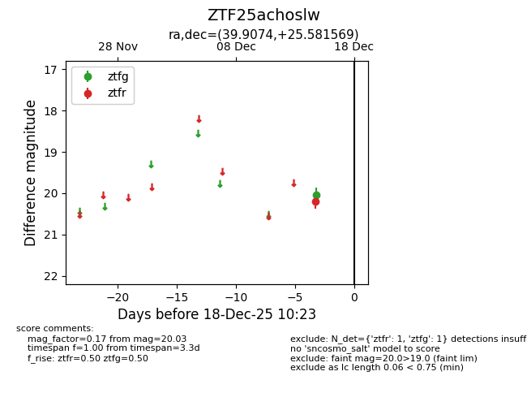
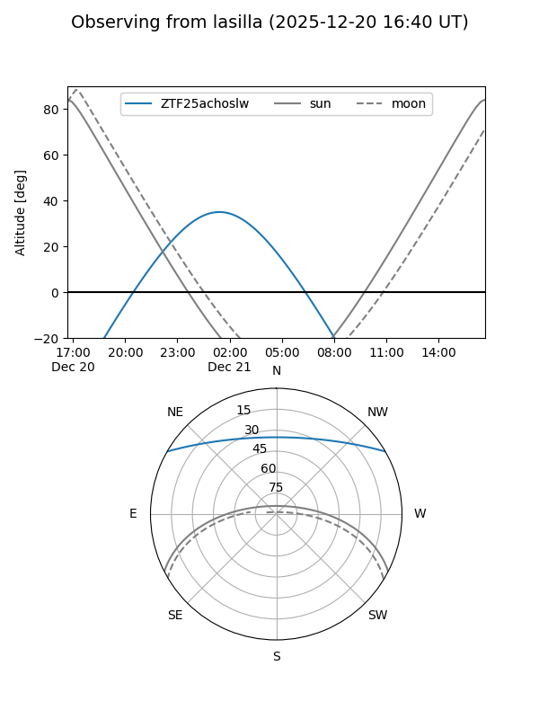
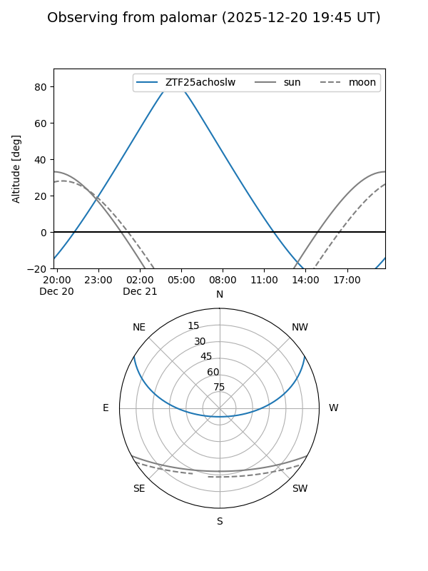

ZTF25achoslw
Target ZTF25achoslw at 2025-12-18 11:18
Aliases and brokers:
FINK: fink-portal.org/ZTF25achoslw
Lasair: lasair-ztf.lsst.ac.uk/objects/ZTF25achoslw
ALeRCE: alerce.online/object/ZTF25achoslw
alt names
ZTF25achoslw (ztf,fink_ztf)
Coordinates:
equatorial (ra, dec) = 39.9074,+25.58157
equatorial (HMS+DMS) = 02:39:37.77,+25:34:53.65
galactic (l, b) = (151.5861,-31.20176)
Photometry
last ztfg=20.03, ztfr=20.20
1 ztfg, 1 ztfr detections
Lightcurve

Visibility


Additional plots